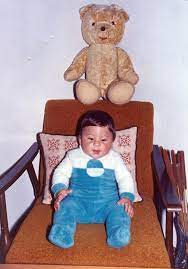

Тодор Тоше Проески рођен је 25.1.1981. године, у Прилепу, а одрастао је у Крушеву, малом граду у Македонији. У Прилепу је рођен ,,инцидентно" како је рекао у једном интервјуу. Тодор Проески је био један од најпознатијих македонских певача широм Југославије. Живео је у скромној породици коју су чинили он, његова шест година старија сестра Дора, мајка Доменика и отац Никола.
Тоше је био насмејано, мирно и весело дете. Таленат за музику је наследио од својих родитеља. Његов отац је свирао гитару и мандолину, мајка му је певала, а на музичко опредељење је највише утицала сестра која је слушала рок музику.
Као дете певао је у школском хору. Први наступ је имао са само 10 година када је на школској приредби отпевао "Аве Марија" и расплакао целу публику. Наредни наступ имао је са 11 година када је на фестивалу "Златно славјече" заједно са другарицом Емилијом извео песму "Јас и мојот дедо" на влашком језику. Када би говорио о том наступу увек би поменуо да је имао огромну трему и да га је због тога много болела глава.
Тоше је након основне школе своје школовање наставио у средњој музичкој школи у Битољу, а након тога уписује скопску Музичку академију. Омиљени инструмент му је био гитара, али је умео да свира и кларинет, клавир, саксофон и бубњеве.
Тошетова каријера започиње 1996. године када је победио на фестивалу "Мелфест". Исте године појављује се и у првој сцени на филму "Миротворац" као члан хора.
На фестивалу "Макфест" у Штипу 1997. учествовао је са песмом "Пусти ме" и ту стекао велику популарност.
Потом, 1998. је учествовао на националном избору за песму Евровизије. Захваљујуци упорности његовог оца почиње сарадњу са Григором Копровим, македонским композитором, који му пише прво песму "Усне на уснама" а потом је уследило јос много хитова.
Јако значајна година била је 1999. када Тоше склапа уговор са продукцијском кућом "Авалон" и потом објављује свој први албум "Негде у ноћи" који је продат у 60.000 примерака. Недуго након тога победјује на Скопље фестивалу а потом је одржао и свој први концерт.
Пицтуре
Пицтуре
Пицтуре
Следеће године Тоше на националном избору за песму Евровизије осваја 3. место упркос највећем броју гласова публике. На медјународном музичком фестивалу "Славјански базар" у Белорусији освојио је прво место, а на фестивалу "Сунчане скале" у Херцег Новом друго. Његов албум је освојио престижне награде 12 величанствених за најбољи мушки вокал, најбољи концерт године и најбољи видео. Те године објављује и свој други албум "Син Божији" на коме се налазило 9 песама. Такодје, те године добија и Оскара популарности на простору бивШих југословенских република.
У марту 2001. године одржава 5 заредом распродатих концерата у Скопљу а потом је одржао и први велики концерт изван Македоније у београдском "Сава" центру. Затим одлази са групом великих македонских мужичара на турнеју у Аустралију.
Наредне године Тоше започиње сарадњу са менадзерком Љиљаном Петровић и српском продукцијском кућом "БК Соунд". У Атини снима нови албум "Ако ме погледаш у очи" који је објављен на македонском и српском језику после чега креће велика турнеја на којој је промовисао нови албум.
Пицтуре
Пицтуре
Наредне 2003. године Тоше победјује на српском фестивалу "Беовизија" са песмом "Чија си". Такодје, победјује и на националном избору за песму Евровизије. Те године добија и награду Мајке Терезе за сва хумана дела која је учинио.
2004. године Тоше учествује на Евровизији у Турској са песмом "Лифе". Иако је освојио 14. место многи европски медији били су одушевљени његовим вокалним способностима. Одушевио је све изводјењем "О соле мио" на прес конференцији у Истамбулу, а тада стижу и прве понуде да сними албум за светско тржиште. Исте године Тоше објављује албум "Дан за нас" на коме се налази 14 песама. Због велике хуманистиУницеф га проглашава амбасадором добре воље и он снима песму "Овај свет" која постаје химна Уницефа.
Следеце године издаје и пети по реду албум "Пратим те" који се сматра једним од најуспешнијих албума балканске музиЧке сцене.
Гостовао је на турнеји Тонија Цетинског са којим је снимио дует "Лагала нас мала". Проглашен је за најбољег хрватског певача и изводјача иако је био пореклом из Македоније. Једини је страни певач који је освојио главну награду Хрватског радио фестивала.
2006. године у Македонији излази стрип "Супер Тоше" у коме се Тоше као суперјунак бори фантастичним гласом против непријатеља. Затим издаје албум "Божилак" на коме се налазило 14 македонских традиционалних песама а такодје и сингл "Срце није камен". Поново се опробао као глумац глумећи у серији "Забрањена љубав"
Пицтуре
Пицтуре
Пицтуре
Следеће године у оквиру кампање која учи децу да треба редовно да перу зубе снима дует са Антонијом Шолом "Волим осмех твој". За дан заљубљених одрзао је концерт у Београду у препуној арени. У августу издаје и последњи албум "Игра без граница" који је у року од само медец дана достигао златан тираж у Македонији, Србији, Словенији и Хрватској. Свој последњи концерт одржао је 5. октобра на градском стадиону у Скопљу у акцији прикупљања средстава за обнову македонских школа. То је требао да буде почетак његове велике турнеје по бившој Југославији.
15. октобра даје свој последњи интервју за емисију "Вртелешка" након чега седа у ауто и креће на пут за Загреб где су га чекале бројне обавезе.
16. октобра у 6.20х на аутопуту Загреб-Липовац код Нове Градишке догодила се саобраћајна несрећа у којој Тоше губи живот. Вест о његовој смрти шокирала је све људе на простору бивше Југославије. Македонска влада прекинула је заседање и прогласила дан Жалости. Народ је поцео спонтано да се окупља на трговима како би запалили свећу, спустили цвеће или плишаног меду омиљеном певачу. Сви кафићи, клубови, радио и телевизијске станице су пуштали само Тошине песме. У основној школи коју је Тоше похадјао часови су прекинути, из сваке куће у Крушеву цуо се плач. У свим градовима у Македонији отворена је књига жалости у које су ожалошћени људи могли да напишу последњу поруку страдалом идолу.
Хеликоптером је пребачен у Скопље, а одате потом и у своје родно Крушево у коме је сахрањен. Градјани су се спонтано окупљали и држали свеће покрај пута којим је Тосетово тело вожено за Крушево. Километри пута личили су на звездани пут за Тошета.
17. октобра ТоШе је сахрањен уз највеће државне почасти у свом родном граду. Тај дан прогласен је даном жалости у Македонији, а у Београду у његову цаст постављен је билборд "Не брзе од живота". Постхумно му је додељена награда за зивотно дело и титула почасног градјанина Македоније.
Тошетов андјеоски глас, љубав и хуманост оставили су велики траг на Балкану. Његовим прераним одласком сви смо изгубили много.
Нешто пре смрти, Тоше је радио на албуму на енглеском језику. Сарадјивао је са италијанском звездом Дјаном Нанини и многим светским продуценима,композиторима и текстописцима. Тај албум је издат тек 2008. године. Такодје, било је преговора за дует са мегазвездом Бијонсе.
Било је у плану да се тада у Лондону сниме и две песме за Америчку серију "Хероји". За време борвакма у Лондону све време сниман је документарни филм о Тошету који је требало да буде приказан почетком 2008. године.
Након смрти сви Тошетови албуми су распродати а најпродаванији је био последњи, "Игра без граница". У легенду је отисао брзе него сто је његов живот трајао, али из наших срца неце отици никад.
Након смрти јавили су се и нумеролози који су тврдили да је Тошету тако било судјено. Како кажу, њега је цео живот пратио број 26, колико је и имао година када је преминуо. Ево неких њихових доказа:
-родјен је 25.01 (25+1=26)
-каријера му је почела 1997. године (1+9+9+7=26)
-умро је 16.10 (16+10=26)
-збир година путника у аутомобилу је био 26 ([2+6]+[4+9]+[3+2]=26)
-погинуо је у 6 сати и 20 минута (6+20=26)
Број 26 обележава знак Омега, а он значи крај..
Да ли је све ово морало овако да буде? Да ли је стварно то била судбина? Остаје нам заувек да се питамо..
Тоше је био посебан човек. Бог га је узео њему да пева.